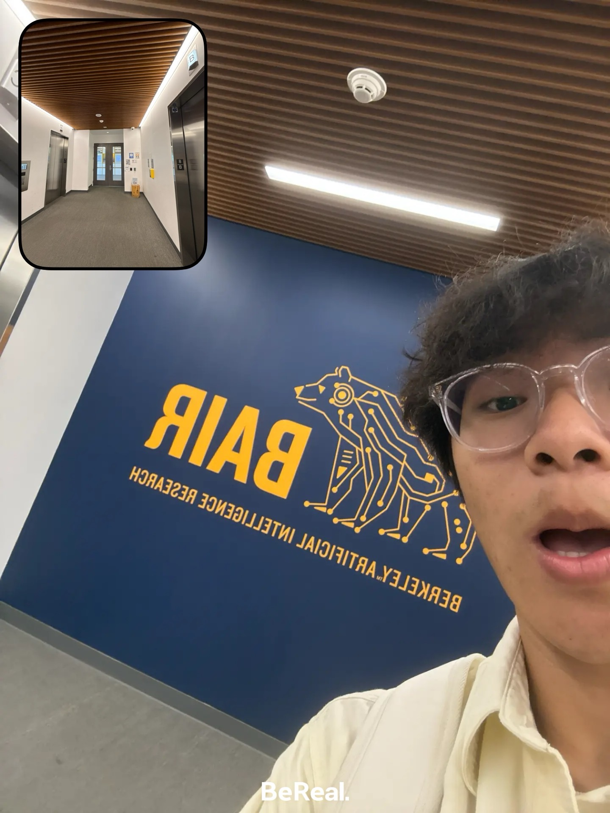
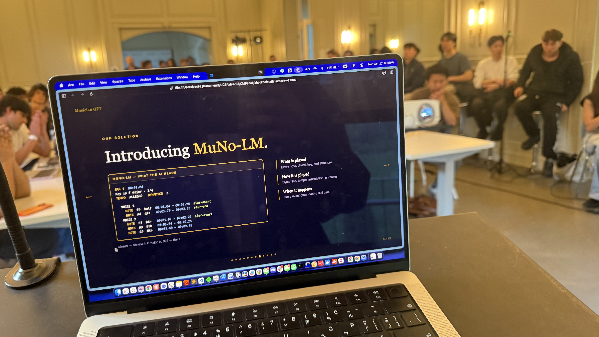
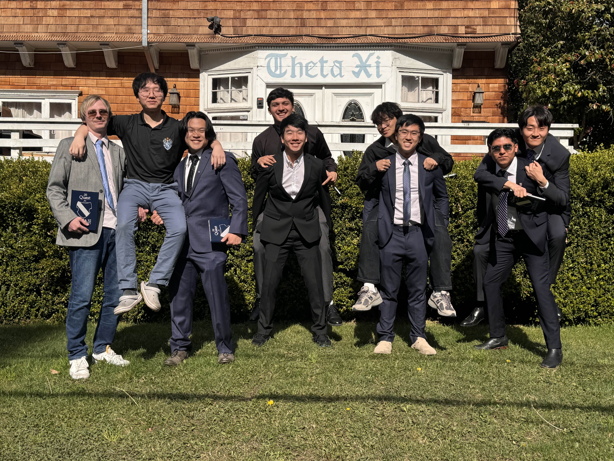
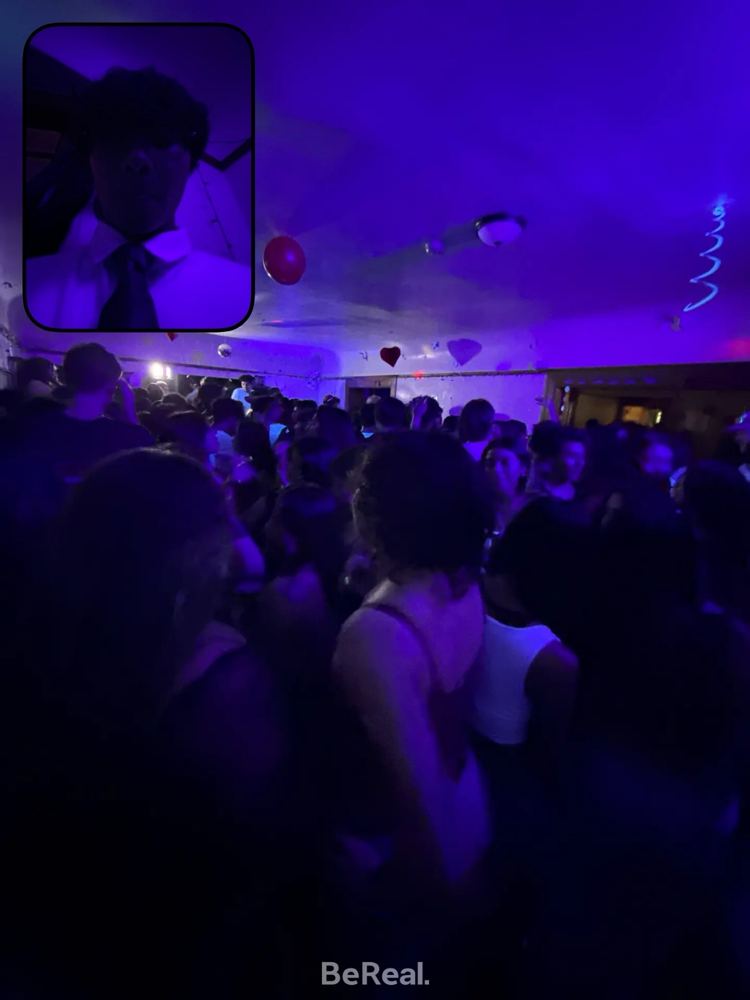
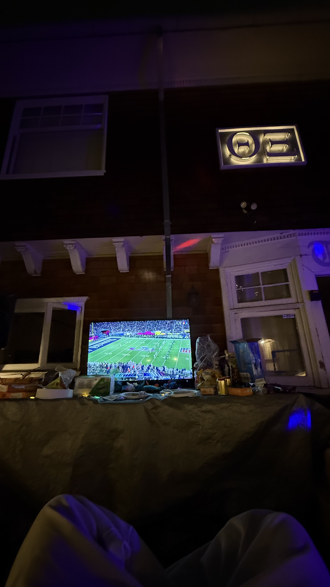
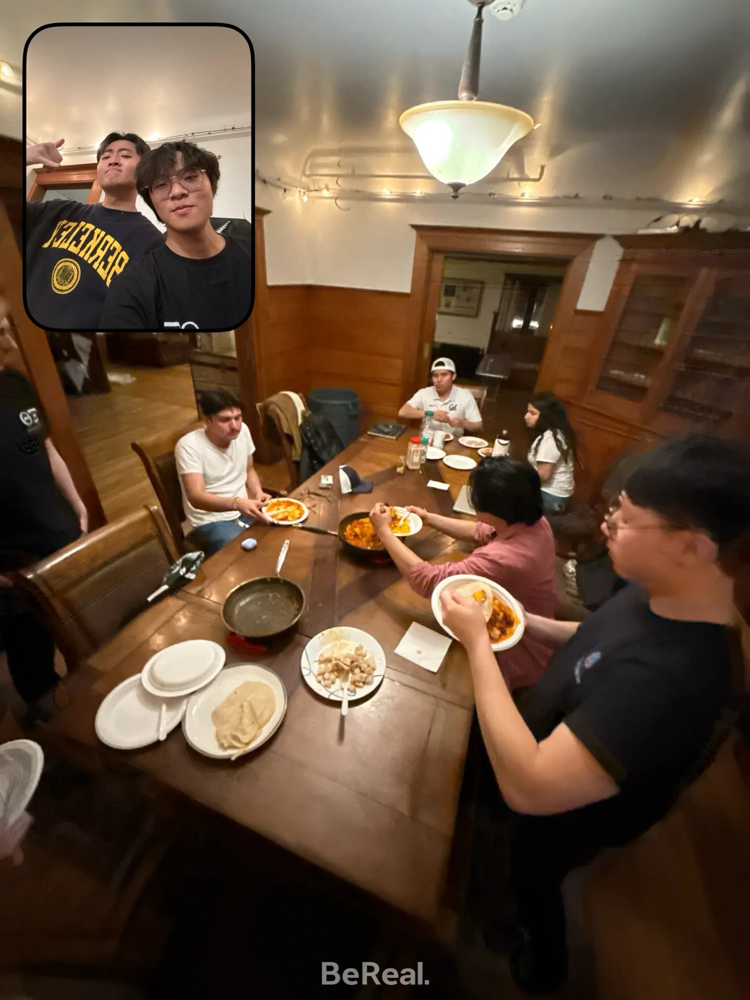
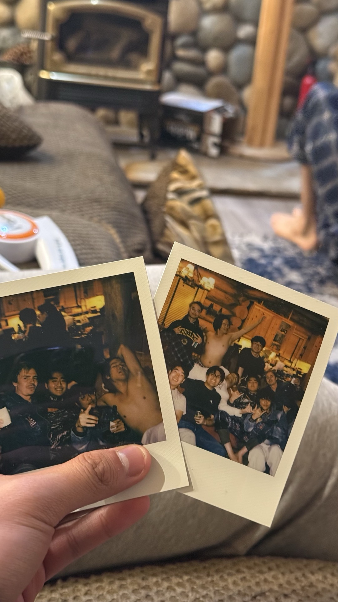
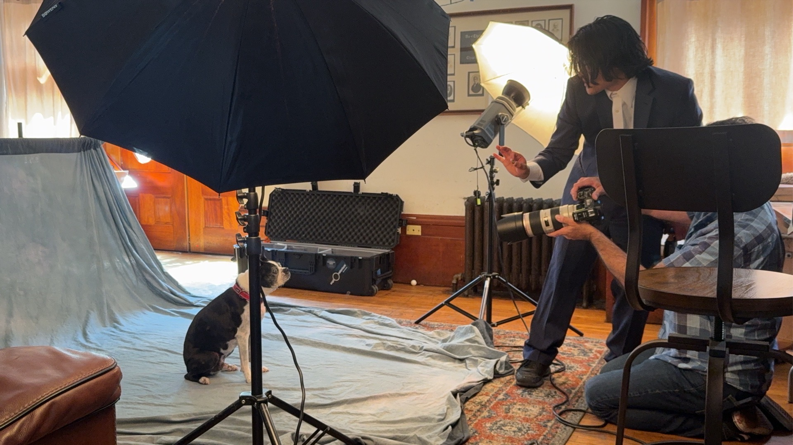
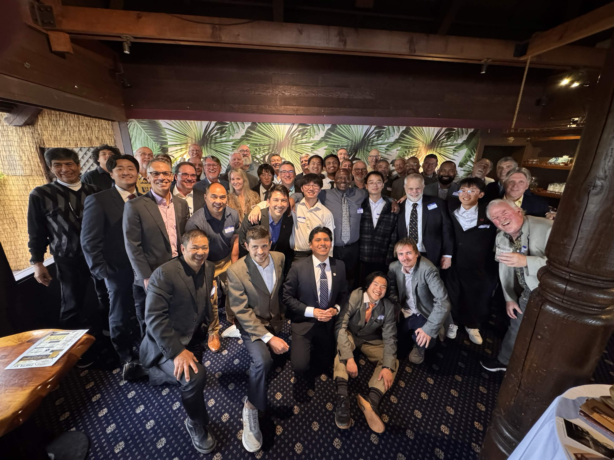

I · In the Classroom
An academic semester.
CS 189 · 180 · 185 · Music 159 ·
joined BAIR & CNMAT,
pitched at AGI House.
joined BAIR & CNMAT,
pitched at AGI House.



II · Brotherhood
Theta Xi · 6294
Invited in the spring —
a brotherhood, a chapter,
and the wildest stories of the year.
a brotherhood, a chapter,
and the wildest stories of the year.








